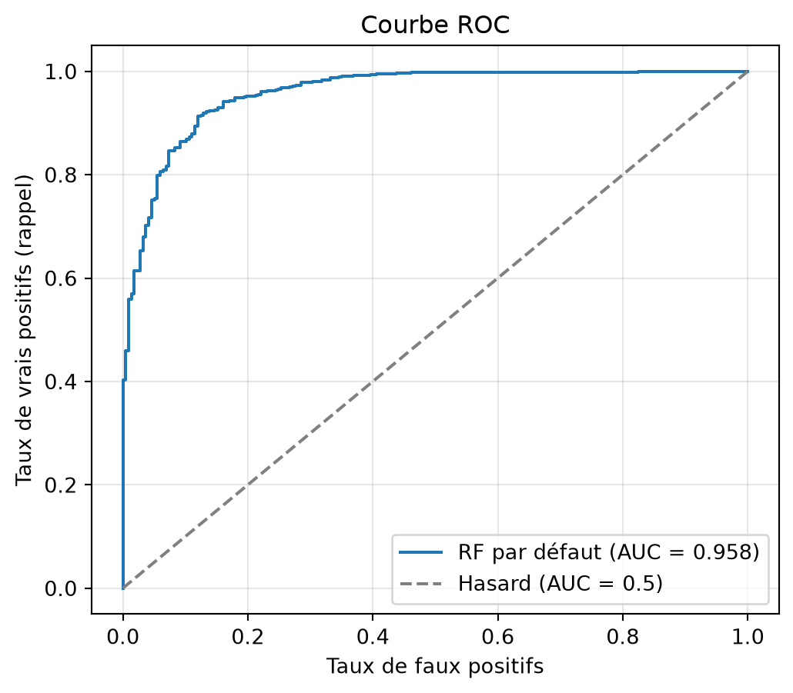
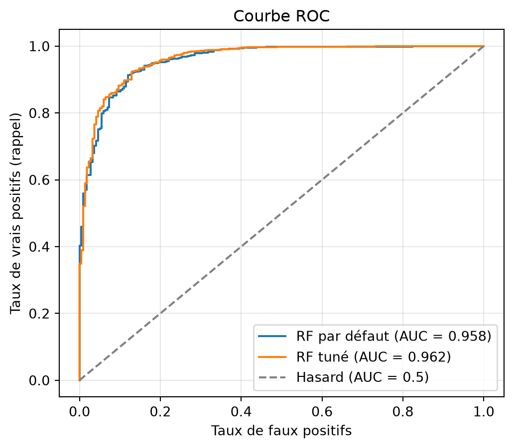
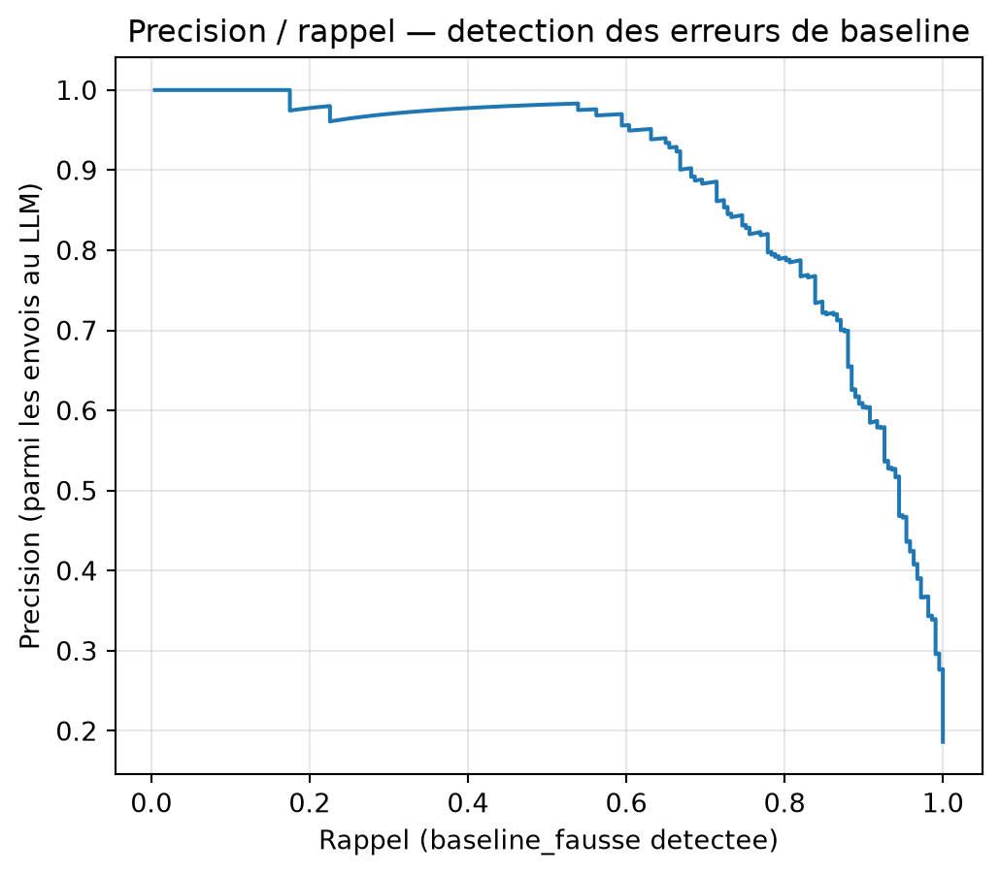

[charger_donnees] projet-budget-famille/data/workflow_runs/2026-06-29/codif-vvkv9/decide-coicop/predictions.parquet → shape = (5825, 38)Modélisation
Détecter automatiquement les erreurs d’un classifier simple via une Random Forest
Objectif
Un nouveau classifieur simple a été mis en place, avec comme objectif de compléter le LLM-as-a-judge, voire de la concurrencer. Celui-ci s’appuie sur une idée simple : suivre l’avis majoritaire des classifieurs (cf. Accords unanimes des 4 classifieurs et 3 classifieurs contre 1 dissident) et TorchTextClassifier en cas d’égalité (cf. classifieurs seuls).
Le but est ensuite d’en étudier les performances, notamment via une Random Forest, afin d’établir des cas où ce classifieur simple est assez efficace, ne nécessitant pas forcément l’intervention du LLM-as-a-judge, étant plus économe en temps et en ressources.
Résultats calculés pour le run : s3://projet-budget-famille/data/workflow_runs/2026-06-29/codif-vvkv9/decide-coicop/predictions.parquet.
Performance de la baseline
Avant d’entraîner un modèle pour détecter ses erreurs, on mesure la performance brute de la baseline (vote majoritaire, TTC arbitre en cas d’égalité), au niveau 4. En comparaison : l’accuracy obtenue en suivant TTC seul permet de chiffrer l’apport du vote majoritaire, et l’accuracy du LLM-judge donne la référence haute (plus coûteuse) à laquelle la baseline est comparée.
| Méthode | Accuracy | |
|---|---|---|
| 0 | Vote majoritaire (baseline) | 81.4% |
| 1 | TTC seul | 74.3% |
| 2 | LLM-judge | 81.9% |
Gain du vote majoritaire vs TTC seul : +7.07 points
Écart baseline vs LLM-judge : -0.53 points
Analyse des erreurs de la baseline
Avant d’entraîner un modèle, on regarde directement ce qui distingue les cas où la baseline trouve le bon code de ceux où elle se trompe, une lecture plus directement interprétable que les importances de features du modèle entraîné plus loin.
Par division COICOP
| n | baseline_correcte (%) | |
|---|---|---|
| Division | ||
| Produits alimentaires et boissons non alcoolisées (01) | 3266 | 88.1 |
| Boissons alcoolisées, tabac et stupéfiants (02) | 124 | 96.0 |
| Articles d'habillement et chaussures (03) | 159 | 61.0 |
| Logement, eau, gaz, électricité et autres combustibles (04) | 126 | 65.9 |
| Meubles, articles de ménage et entretien courant du foyer (05) | 301 | 86.0 |
| Santé (06) | 129 | 39.5 |
| Transports (07) | 286 | 89.5 |
| Information et communication (08) | 88 | 72.7 |
| Loisirs, sport et culture (09) | 398 | 81.7 |
| Services de l'enseignement (10) | 9 | 66.7 |
| Services de restauration et d'hébergement (11) | 323 | 66.9 |
| Assurance et services financiers (12) | 76 | 75.0 |
| Soins corporels, protection sociale et biens et services divers (13) | 251 | 91.2 |
| Produit indéterminé/illisible (98) | 209 | 17.2 |
| Hors COICOP (dons, impôts, opérations bancaires...) (99) | 80 | 78.8 |
Par niveau d’accord entre classifieurs
| n | taux_correct | |
|---|---|---|
| nb_accords_max | ||
| 1 | 566 | 2.7 |
| 2 | 1647 | 76.6 |
| 3 | 1845 | 92.7 |
| 4 | 1767 | 99.2 |
Scores de confiance : cas corrects vs incorrects
Médiane de chaque score, calculée sur les valeurs brutes (avant imputation des NaN).
| baseline_correcte | Baseline correcte | Baseline fausse |
|---|---|---|
| lcs_distance | 0.444444 | 0.470588 |
| rag_confidence | 0.950000 | 0.700000 |
| ragann_confidence | 1.000000 | 1.000000 |
| ttc_conf_1 | 0.990000 | 0.780000 |
| budget | 4.300000 | 7.990000 |
Préparation des données pour le modèle
La cible du modèle est binaire : la baseline a-t-elle trouvé le bon code au niveau 4 ? (1 = correcte, 0 = fausse). Les features excluent volontairement tout ce qui viendrait du LLM-judge, puisque l’objectif est justement de prédire sans l’appeler.
Features catégorielles (encodées par OrdinalEncoder, valeur inconnue → -1) :
| Colonne | Description | Valeurs manquantes |
|---|---|---|
lcs_code_n1, rag_code_n1, ragann_code_n1, ttc_code_1_n1 |
Code prédit par chaque classifieur de base, tronqué au niveau 1 (division) | → "INCONNU" |
pred_baseline_n1 |
Code choisi par la baseline (vote majoritaire), tronqué au niveau 1 | → "INCONNU" |
shop_type_name |
Type d’enseigne | → "INCONNU" |
source |
Source de l’observation | → "INCONNU" |
Features numériques (passées telles quelles au modèle) :
| Colonne | Description | Valeurs manquantes |
|---|---|---|
nb_accords_max |
Taille du plus gros groupe de classifieurs d’accord, au niveau 4 | — |
unanimite |
1 si les 4 classifieurs de base sont d’accord au niveau 4, 0 sinon | — |
lcs_distance |
Distance de similarité du classifieur LCS | → 1.5 (hors de [0, 1], équivaut à “très loin”) |
rag_confidence, ragann_confidence, ttc_conf_1 |
Scores de confiance des classifieurs RAG, RAG-ANN et TTC | → -1 (hors de [0, 1]) |
budget |
Montant de la dépense | → médiane du train, dans le pipeline d’entraînement (évite toute fuite train/test) |
14 features (7 catégorielles, 7 numériques) pour 5825 observations, dont 81.4% de baseline correcte.
Entraînement et évaluation
Le modèle produit une probabilité P(baseline correcte) pour chaque observation. Cette probabilité est l’élément central de l’articulation avec le reste du projet : c’est elle qui sera seuillée dans la section Compromis précision/rappel pour décider, au cas par cas, si l’on fait confiance à la baseline (rapide, gratuite) ou si l’on envoie l’observation au LLM-as-a-judge (plus fiable, plus coûteux). L’évaluation ci-dessous sert donc à vérifier que cette probabilité est suffisamment fiable avant d’en faire une règle de décision opérationnelle.
Un premier split train/test sert à obtenir des métriques et les importances de features ; la validation croisée donne ensuite une estimation plus robuste, en réentraînant le pipeline complet (encodage compris) sur chaque fold.
Split train/test
Train : 4660 lignes — Test : 1165 lignes (taux de baseline correcte dans le train : 81.4%)
Accuracy (test) : 91.2% — ROC AUC : 0.958
| Prédit | baseline correcte | baseline fausse |
|---|---|---|
| Vrai | ||
| baseline correcte | 875 | 73 |
| baseline fausse | 29 | 188 |
| precision | recall | f1-score | support | |
|---|---|---|---|---|
| baseline_fausse | 0.720 | 0.866 | 0.787 | 217.000 |
| baseline_correcte | 0.968 | 0.923 | 0.945 | 948.000 |
| accuracy | 0.912 | 0.912 | 0.912 | 0.912 |
| macro avg | 0.844 | 0.895 | 0.866 | 1165.000 |
| weighted avg | 0.922 | 0.912 | 0.915 | 1165.000 |
Courbe ROC

Importances des features
| Importance (%) | |
|---|---|
| nb_accords_max | 35.6 |
| ttc_conf_1 | 17.3 |
| unanimite | 7.9 |
| rag_confidence | 7.3 |
| ragann_code_n1 | 5.5 |
| budget | 5.0 |
| lcs_distance | 4.8 |
| ragann_confidence | 3.9 |
| pred_baseline_n1 | 2.8 |
| rag_code_n1 | 2.6 |
| ttc_code_1_n1 | 2.4 |
| lcs_code_n1 | 2.0 |
| shop_type_name | 1.7 |
| source | 1.2 |
Validation croisée (estimation plus robuste)
Accuracy : 89.0% ± 0.7% — ROC AUC : 0.955 ± 0.005 (5 folds)
| Prédit (out-of-fold) | baseline correcte | baseline fausse |
|---|---|---|
| Vrai | ||
| baseline correcte | 4266 | 473 |
| baseline fausse | 166 | 920 |
Tuning des hyperparamètres
Le RF ci-dessus utilise des hyperparamètres fixés à la main (n_estimators=300, min_samples_leaf=5, class_weight="balanced"). On vérifie ici si un RandomizedSearchCV (60 tirages) trouve mieux. La recherche est faite uniquement sur le train (même split que ci-dessus, test_size=0.2, random_state=42) : le score CV pendant la recherche ne sert qu’à choisir les hyperparamètres, l’écart avec le score annoncé plus haut se lit sur le même test set, sans fuite.
Le scoring optimisé n’est pas le ROC AUC (métrique de classement globale, insensible au déséquilibre des classes) mais l’average precision sur la classe “baseline_fausse” (aire sous la courbe précision/rappel tracée plus bas) : c’est la classe qui compte opérationnellement, puisqu’une “baseline fausse” non détectée est une erreur silencieuse qui ne part jamais au LLM.
Meilleurs hyperparamètres : {'rf__class_weight': None, 'rf__max_depth': 20, 'rf__max_features': 'sqrt', 'rf__min_samples_leaf': 1, 'rf__n_estimators': 739}
Score CV (average precision, classe “baseline_fausse”) pendant la recherche : 0.873
| Modèle | Accuracy (test) | ROC AUC (test) | |
|---|---|---|---|
| 0 | RF par défaut | 91.2% | 0.958 |
| 1 | RF tuné | 92.4% | 0.962 |
| Prédit | baseline correcte | baseline fausse |
|---|---|---|
| Vrai | ||
| baseline correcte | 940 | 8 |
| baseline fausse | 80 | 137 |

L’accuracy et le ROC AUC globaux masquent un effet important sur la classe qui compte réellement pour ce modèle : celle des vraies erreurs de baseline, qu’on cherche à détecter pour décider de l’envoi au LLM-judge.
Sur les 217 vraies erreurs de baseline du test (seuil par défaut 0.5), le RF par défaut (class_weight='balanced') en détecte 86.6% (188/217), contre 63.1% (137/217) pour le RF tuné (class_weight=None).
Optimiser directement l’average precision sur la classe “baseline_fausse” plutôt que le ROC AUC ne change pas la conclusion : le rappel du RF tuné au seuil par défaut (0.5) reste inférieur à celui du RF par défaut. L’average precision est une métrique indépendante du seuil (elle juge le classement sur toute la plage des seuils possibles), donc l’améliorer ne garantit rien sur la performance à un seuil fixe précis — et class_weight=None continue de produire des probabilités tassées vers “correcte”, peu adaptées à un seuil figé à 0.5. C’est pourquoi le modèle utilisé pour la suite de cette page (section Compromis précision/rappel) reste le RF par défaut (res), pas le RF tuné : quel que soit le critère d’optimisation essayé, le gain de tuning ne s’est pas montré utilisable pour cet usage.
| Importance (%) | |
|---|---|
| nb_accords_max | 34.2 |
| ttc_conf_1 | 13.4 |
| budget | 8.7 |
| lcs_distance | 7.5 |
| ragann_code_n1 | 6.6 |
| rag_confidence | 5.6 |
| ragann_confidence | 3.9 |
| shop_type_name | 3.6 |
| pred_baseline_n1 | 3.6 |
| ttc_code_1_n1 | 3.2 |
| unanimite | 2.9 |
| lcs_code_n1 | 2.7 |
| rag_code_n1 | 2.7 |
| source | 1.5 |
Analyse des erreurs manquées par le modèle
L’accuracy et les importances de features restent agrégées : elles ne disent rien de ce qui distingue, parmi les vraies erreurs de baseline, celles que le modèle détecte de celles qu’il laisse passer à tort (au seuil par défaut 0.5). C’est cette seconde catégorie, un faux négatif du modèle, qui est la plus coûteuse : la baseline a faux, mais on lui fait confiance sans envoyer au LLM.
Sur les 217 erreurs réelles de baseline du test, la RF (seuil 0.5) en manque 29 : elle leur attribue P(baseline correcte) > 0.5 alors que la baseline a bel et bien faux.
| statut | Détectée par la RF | Manquée (RF dit correcte) |
|---|---|---|
| n | 188.000 | 29.00 |
| nb_accords_max_median | 1.000 | 3.00 |
| ttc_conf_1_median | 0.715 | 0.98 |
| rag_confidence_median | 0.700 | 0.90 |
| ragann_confidence_median | 1.000 | 1.00 |
| budget_median | 8.015 | 4.90 |
| proba_correcte_median | 0.104 | 0.65 |
| statut | Détectée par la RF | Manquée (RF dit correcte) | taux_manquee (%) |
|---|---|---|---|
| Division | |||
| Transports (07) | 5 | 3 | 37.5 |
| Logement, eau, gaz, électricité et autres combustibles (04) | 7 | 4 | 36.4 |
| Soins corporels, protection sociale et biens et services divers (13) | 4 | 2 | 33.3 |
| Hors COICOP (dons, impôts, opérations bancaires...) (99) | 2 | 1 | 33.3 |
| Information et communication (08) | 4 | 1 | 20.0 |
| Meubles, articles de ménage et entretien courant du foyer (05) | 9 | 2 | 18.2 |
| Produits alimentaires et boissons non alcoolisées (01) | 69 | 11 | 13.8 |
| Santé (06) | 19 | 2 | 9.5 |
| Services de restauration et d'hébergement (11) | 14 | 1 | 6.7 |
| Loisirs, sport et culture (09) | 18 | 1 | 5.3 |
| Produit indéterminé/illisible (98) | 28 | 1 | 3.4 |
| Boissons alcoolisées, tabac et stupéfiants (02) | 1 | 0 | 0.0 |
| Articles d'habillement et chaussures (03) | 7 | 0 | 0.0 |
| Assurance et services financiers (12) | 1 | 0 | 0.0 |
Détail des cas manqués
Les 29 erreurs manquées elles-mêmes, triées par proba_rf décroissante (les cas où le modèle est le plus confiant à tort en premier).
| ligne | enseigne | code_vrai | code_baseline | lcs_code | rag_code | ragann_code | ttc_code_1 | ttc_conf_1 | nb_accords_max | proba_rf | |
|---|---|---|---|---|---|---|---|---|---|---|---|
| 0 | 4845 | Magasins maxi-discompte | 04.4.1 | 01.2.5 | 05.6.1.1 | 01.2.5 | 01.2.5 | 01.2.5 | 1.00 | 3 | 0.946 |
| 1 | 3611 | None | 01.2 | 01.2.1 | 01.2.1 | 01.2.1 | 01.2 | 01.2.1 | 1.00 | 3 | 0.928 |
| 2 | 3853 | None | 01.1.1.5 | 01.1.9.1 | 01.1.9.1 | 01.1.9.1 | 01.1.1.5 | 01.1.9.1 | 0.99 | 3 | 0.878 |
| 3 | 367 | None | 01.1.6.1 | 01.1.6.7 | 01.1.6.7 | 01.1.6.7 | 01.1.6.1 | 01.1.6.7 | 0.70 | 3 | 0.870 |
| 4 | 3869 | None | 01.1.7.4 | 01.1.9.4 | 01.1.9.4 | 01.1.9.4 | 01.1.7.4 | 01.1.9.4 | 0.64 | 3 | 0.845 |
| 5 | 3707 | None | 13.2.1.1 | 13.1.3.2 | 13.1.3.2 | 13.1.3.2 | 13.2.1.1 | 13.1.3.2 | 0.99 | 3 | 0.843 |
| 6 | 5364 | Supermarchés, magasins multi-commerces | 01.1.9.1 | 01.1.1.3 | 01.1.1.3 | 01.1.1.3 | 01.1.9.1 | 01.1.1.3 | 0.51 | 3 | 0.822 |
| 7 | 3153 | None | 06.2 | 13.9.0.9 | 13.9.0.9 | 13.9.0.9 | 06.2 | 13.9.0.9 | 0.99 | 3 | 0.797 |
| 8 | 2262 | None | 04.3.1.1 | 05.6.1.1 | 05.6.1.1 | 05.6.1.1 | 04.3.1.1 | 05.6.1.1 | 1.00 | 3 | 0.778 |
| 9 | 4121 | Magasins maxi-discompte | 01.1.7.3 | 01.1.7.9 | 01.1.7.9 | 01.1.7.9 | 01.1.7.3 | 01.1.7.9 | 0.91 | 3 | 0.761 |
| 10 | 62 | Services d'équipement du foyer : télécommunications, fibre, Canal +, Satellite, service de télésurveillance | 08.3.2 | 08.3.9.2 | 08.3.9.2 | 08.3.9.2 | 08.3.9.2 | 08.3.2 | 0.72 | 3 | 0.724 |
| 11 | 3990 | Service d’entretien, de réparation ou de location pour d’autres biens (vêtements, appareils électroménagers…) | 05.6.2.9 | 05.2.1.2 | 05.2.1.2 | 05.2.1.2 | 05.6.2.9 | 05.2.1.2 | 1.00 | 3 | 0.723 |
| 12 | 1093 | Grande surface spécialisée dans l’équipement de la maison | 04.3.1.1 | 05.5.2.2 | 05.5.2.2 | 05.3.1.9 | 05.5.2.2 | 05.5.2.2 | 0.91 | 3 | 0.665 |
| 13 | 3420 | Hypermarchés | 07.2.2.2 | 07.2.2 | 07.2.2 | 07.2.2 | 07.2.2 | 07.2.2.2 | 0.98 | 3 | 0.655 |
| 14 | 3388 | Magasins maxi-discompte | 01.1.1.3 | 05.6.1.9 | 05.6.1.9 | 05.6.1.9 | 05.6.1.9 | 05.6.1.9 | 1.00 | 4 | 0.650 |
| 15 | 2393 | Hypermarchés | 01.1.3.3 | 01.1.3.4 | 01.1.9.1 | 01.1.3.4 | 01.1.3.3 | 01.1.3.4 | 0.98 | 2 | 0.640 |
| 16 | 1896 | Magasins maxi-discompte | 01.1.6.1 | 01.1.6.9 | 01.1.4.5 | 01.1.6.9 | 01.1.6.1 | 01.1.6.9 | 0.98 | 2 | 0.604 |
| 17 | 2972 | Petite surface spécialisée dans la vente de carburant (station-service) | 07.2.3 | 07.2.1.1 | 07.2.3 | 07.2.1.1 | 07.2.3 | 07.2.1.1 | 0.98 | 2 | 0.601 |
| 18 | 5388 | Grande surface spécialisée dans l’équipement de la maison | 04.3.1.1 | 05.6.1.9 | 05.6.1.9 | 05.5.2.2 | 04.3.1.1 | 05.6.1.9 | 0.99 | 2 | 0.592 |
| 19 | 185 | Grande surface spécialisée dans l’équipement de la maison | 99.1 | 09.7.4 | 09.7.4 | 09.2.1.3 | 09.7.4 | 09.7.4 | 0.47 | 3 | 0.592 |
| 20 | 3000 | Hypermarchés | 01.1.1.3 | 01.1.8.5 | 01.1.8.5 | 01.1.8.5 | 01.1.1.3 | 01.1.8.5 | 0.68 | 3 | 0.580 |
| 21 | 3348 | Petite surface spécialisée dans les biens médicaux (pharmacie) | 06.1.1 | 06.1.1.1 | 06.1.1.1 | 06.1.1.1 | 06.1.1 | 06.1.1.1 | 1.00 | 3 | 0.580 |
| 22 | 1951 | Grande surface spécialisée Loisir, Culture et TIC | 09.7.1 | 09.7.1.9 | 07.2.4.3 | 09.7.1.9 | 09.7.1 | 09.7.1.9 | 0.99 | 2 | 0.575 |
| 23 | 1774 | Grande surface spécialisée Loisir, Culture et TIC | 07.2.3 | 07.2.1.3 | 07.2.1.3 | None | 07.2.3 | 07.2.1.3 | 0.57 | 2 | 0.567 |
| 24 | 998 | Restauration rapide, ventes à emporter (yc ventes par camion) (pizza, glace) | 01.1.2.5 | 11.1.1.2 | 11.1.1.2 | None | 11.1.1.2 | 01.1.2.5 | 0.86 | 2 | 0.559 |
| 25 | 3310 | Supermarchés, magasins multi-commerces | 05.6.1 | 05.6.1.9 | 05.6.1.9 | 05.6.1.9 | 05.6.1 | 05.6.1.9 | 1.00 | 3 | 0.541 |
| 26 | 1836 | Hypermarchés | 98.4 | 01.1.9.1 | 01.1.9.1 | 01.1.9.3 | 01.1.9.1 | 01.1.9.1 | 1.00 | 3 | 0.518 |
| 27 | 3461 | Bars, cafés, salons de thé, glaciers | 11.1.1.2 | 11.1.1.1 | 11.1.1.2 | 11.1.1.1 | 11.1.1.2 | 11.1.1.1 | 0.92 | 2 | 0.516 |
| 28 | 657 | Grande surface non spécialisée (grand magasin…) | 13.2.9.1 | 09.2.1.2 | 01.1.2.5 | 09.2.1.2 | 13.2.9.1 | 09.2.1.2 | 0.85 | 2 | 0.506 |
Compromis précision/rappel
En faisant varier le seuil de probabilité à partir duquel on décide d’envoyer une observation au LLM plutôt que de faire confiance à la baseline, on peut arbitrer entre le nombre d’erreurs manquées et le volume envoyé au LLM. Concrètement : on envoie au LLM les observations pour lesquelles P(baseline correcte) < seuil ; plus le seuil est haut, plus on envoie d’observations au LLM, mais moins on en laisse passer par erreur.
- un seuil plus bas envoie plus d’observations au LLM (meilleur rappel sur “baseline fausse”, donc moins d’erreurs manquées), au prix d’un volume, donc d’un coût, plus élevé
- un seuil plus haut limite le volume envoyé au LLM (économie), mais laisse passer davantage d’erreurs de baseline non détectées

| Envoyés au LLM (n) | % du volume envoyé au LLM | Erreurs manquées (n) | % erreurs détectées | Fiabilité de ce qu'on garde | |
|---|---|---|---|---|---|
| seuil | |||||
| 0.99 | 978 | 84% | 0 | 100.0% | 100.0% |
| 0.95 | 797 | 68% | 0 | 100.0% | 100.0% |
| 0.90 | 674 | 58% | 2 | 99.1% | 99.6% |
| 0.80 | 515 | 44% | 7 | 96.8% | 98.9% |
| 0.50 | 261 | 22% | 29 | 86.6% | 96.8% |
On a ainsi un nombre d’erreur manqué qui dépend du seuil fixé. Les annotations ayant été faites à la main, il est possible qu’il reste quelques coquilles dans l’annotation (code_vrai). Les erreurs indiquées ici peuvent donc ne pas en être.
Réannotation manuelle des cas manqués
Les 35 cas manqués par la RF au seuil par défaut (0.5, cf. section Analyse des erreurs manquées par le modèle) ont été réannoté manuellement (par moi-même) pour distinguer une vraie erreur de la baseline d’une fausse (problème d’annotation inital). Quatre catégories en résultent :
- Erreur réelle : la baseline a bien tort, confirmé par la relecture.
- Ambigu : la baseline a tort, mais la réponse reste litigieuse (presque acceptable).
- Problème de troncature : la baseline a raison, la comparaison brute au niveau 4 ne le détecte pas à cause d’un souci de troncature du code.
- Erreur d’annotation : la baseline a raison, mais le code du jeu de données (
code_vrai) semble lui-même erroné.
Pour affiner ces recherches, j’étudie donc les erreurs manqués selon la probabilité donnée par la RF.
Sur les cas où la baseline a réellement tort, ce qu’elle a suivi (majorité ou TTC), et le rôle de RAG-ANN
Sur les seuls cas où la baseline a réellement tort (catégories Erreur réelle et Ambigu — les erreurs d’annotation et de troncature sont écartées puisque la baseline n’y est pour rien), on regarde ce qu’elle a concrètement suivi : un vote majoritaire entre les 4 classifieurs, ou TTC en tant qu’arbitre (égalité entre plusieurs codes, ou aucun vote possible). Quand c’est la majorité, on regarde en plus si RAG-ANN en faisait partie, ou s’il était le dissident (et ce qu’il répondait dans ce cas).
| code_vrai | code_baseline | code_mathis | categorie | mecanisme | ragann_dans_majorite | ragann_code | |
|---|---|---|---|---|---|---|---|
| ligne | |||||||
| 4845 | 04.4.1 | 01.2.5 | NaN | Ambigu | Majorité | True | 01.2.5 |
| 3611 | 01.2 | 01.2.1 | NaN | Ambigu | Majorité | False | 01.2 |
| 3853 | 01.1.1.5 | 01.1.9.1 | NaN | Ambigu | Majorité | False | 01.1.1.5 |
| 367 | 01.1.6.1 | 01.1.6.7 | NaN | Ambigu | Majorité | False | 01.1.6.1 |
| 3869 | 01.1.7.4 | 01.1.9.4 | NaN | Ambigu | Majorité | False | 01.1.7.4 |
| 3707 | 13.2.1.1 | 13.1.3.2 | NaN | Ambigu | Majorité | False | 13.2.1.1 |
| 5364 | 01.1.9.1 | 01.1.1.3 | NaN | Ambigu | Majorité | False | 01.1.9.1 |
| 3153 | 06.2 | 13.9.0.9 | NaN | Ambigu | Majorité | False | 06.2 |
| 2262 | 04.3.1.1 | 05.6.1.1 | 04.3.1.1 | Erreur reelle | Majorité | False | 04.3.1.1 |
| 4121 | 01.1.7.3 | 01.1.7.9 | NaN | Ambigu | Majorité | False | 01.1.7.3 |
| 62 | 08.3.2 | 08.3.9.2 | NaN | Ambigu | Majorité | True | 08.3.9.2 |
| 1093 | 04.3.1.1 | 05.5.2.2 | NaN | Ambigu | Majorité | True | 05.5.2.2 |
| 3420 | 07.2.2.2 | 07.2.2 | NaN | Ambigu | Majorité | True | 07.2.2 |
| 3388 | 01.1.1.3 | 05.6.1.9 | NaN | Ambigu | Majorité | True | 05.6.1.9 |
| 2393 | 01.1.3.3 | 01.1.3.4 | NaN | Ambigu | Majorité | False | 01.1.3.3 |
| 1896 | 01.1.6.1 | 01.1.6.9 | NaN | Ambigu | Majorité | False | 01.1.6.1 |
| 2972 | 07.2.3 | 07.2.1.1 | NaN | Ambigu | TTC (égalité) | NaN | 07.2.3 |
| 5388 | 04.3.1.1 | 05.6.1.9 | NaN | Ambigu | Majorité | False | 04.3.1.1 |
| 185 | 99.1 | 09.7.4 | NaN | Ambigu | Majorité | True | 09.7.4 |
| 3000 | 01.1.1.3 | 01.1.8.5 | NaN | Ambigu | Majorité | False | 01.1.1.3 |
| 3348 | 06.1.1 | 06.1.1.1 | NaN | Ambigu | Majorité | False | 06.1.1 |
| 1951 | 09.7.1 | 09.7.1.9 | NaN | Ambigu | Majorité | False | 09.7.1 |
| 1774 | 07.2.3 | 07.2.1.3 | NaN | Ambigu | Majorité | False | 07.2.3 |
| 998 | 01.1.2.5 | 11.1.1.2 | NaN | Ambigu | Majorité | True | 11.1.1.2 |
| 3310 | 05.6.1 | 05.6.1.9 | NaN | Ambigu | Majorité | False | 05.6.1 |
| 1836 | 98.4 | 01.1.9.1 | 98.1 | Erreur reelle | Majorité | True | 01.1.9.1 |
| 3461 | 11.1.1.2 | 11.1.1.1 | NaN | Ambigu | TTC (égalité) | NaN | 11.1.1.2 |
| 657 | 13.2.9.1 | 09.2.1.2 | NaN | Ambigu | Majorité | False | 13.2.9.1 |